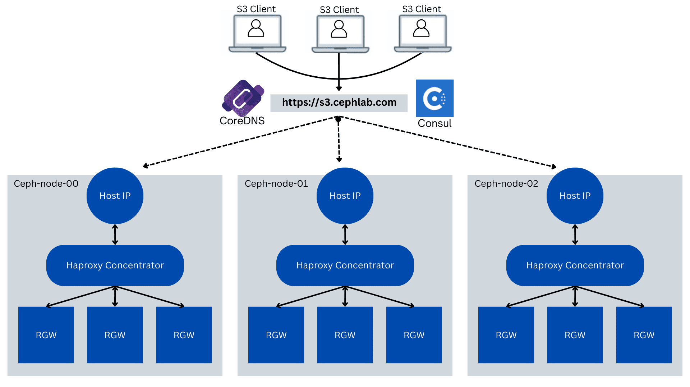
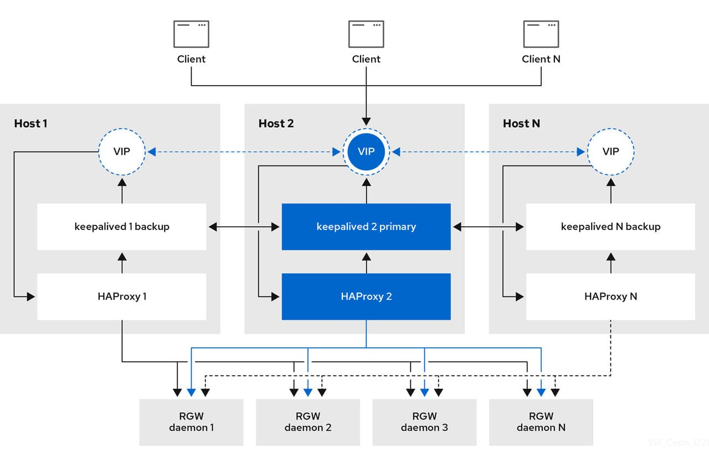
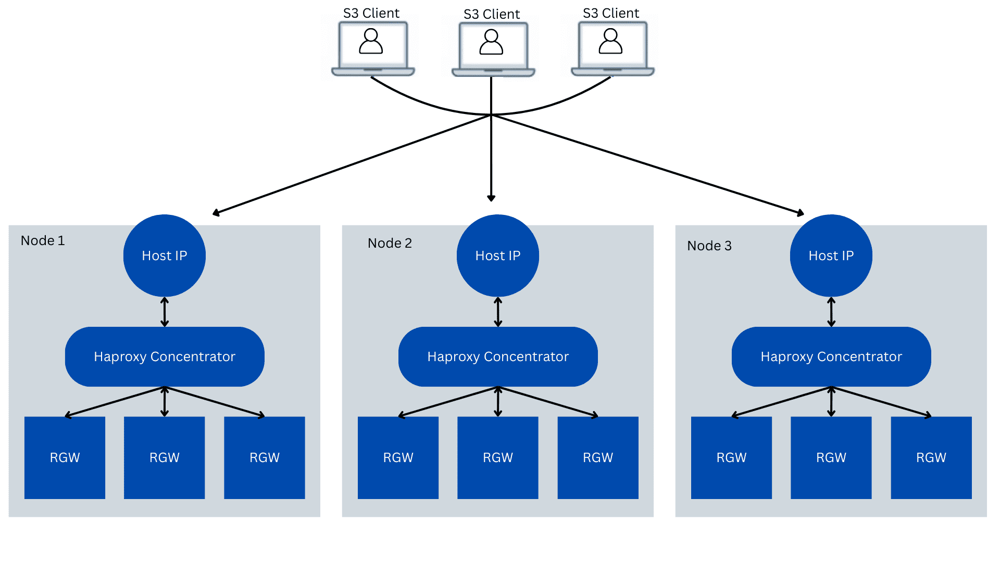
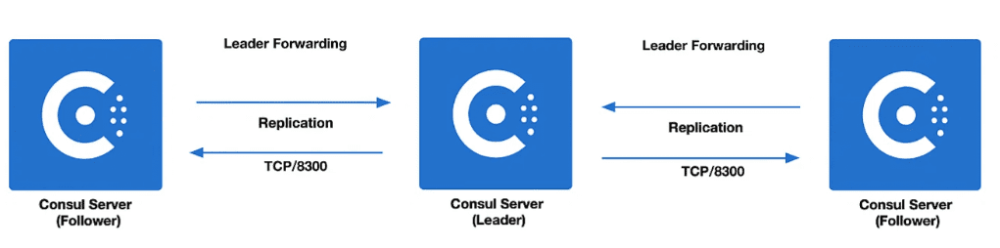

Part 1: Building Health-Aware Load Balancing for the Ceph Object Gateway (RGW)with Consul


Part 1: Dynamic Load Balancing for S3 with Ceph Ingress Concentrators and Consul ¶
Note: this series of articles describes functionality that is expected to be available an upcoming Tentacle dot release.
As object storage deployments grow, maintaining high availability and resilient access to S3-compatible endpoints becomes increasingly complex. Traditional load balancers are often centralized, statically configured, and unaware of backend health. They can introduce performance bottlenecks, operational overhead, and single points of failure. These limitations are especially problematic in distributed or scale-out environments, where services must adapt to topology changes and failures in real time.
Ceph Tentacle introduces ingress concentrators: per-node HAProxy services deployed via cephadm. Each terminator fronts a local pool of Object Gateway (RGW) daemons, allowing every Ceph node to act as an S3 ingress point. This distributed design improves fault tolerance and simplifies scaling by localizing traffic handling.
Ingress Concentrators alone don’t provide dynamic routing or automatic failover. That’s where HashiCorp Consul and CoreDNS come in. By integrating Consul’s service discovery and health checks with CoreDNS’s programmable DNS, we can enable intelligent, health-aware load balancing — all without relying on static configuration or external DNS infrastructure.

In this post, you'll learn how to:
- Understand and deploy Ceph ingress Concentrators
- Register and monitor them dynamically using Consul
- Integrate CoreDNS to enable DNS-based health-aware routing
- Validate routing logic and failover scenarios
Why Static Load Balancing Falls Short ¶
A common starting point for Ceph Object Gateway (RGW) deployments involves placing one or two HAProxy instances in front of a set of gateway daemons. Often, these HAProxy services are paired with Keepalived to create a shared virtual IP (VIP), providing basic high availability. While this approach is functional, it quickly reveals limitations as object storage environments grow:
Centralized bottleneck: With a single VIP, all S3 traffic is funneled through one node and daemon at a time. This becomes a scalability and performance bottleneck, particularly under heavy workloads.
Manual load distribution: While you can configure multiple VIPs across nodes, clients must be explicitly directed to spread requests across them. This typically requires either custom logic in clients or static DNS round-robin entries, neither of which adapts automatically to node health or cluster changes.
Lack of service awareness: Traditional DNS and VIP failover mechanisms operate at the network layer. They don’t natively detect whether individual Ceph Object Gateway (RGW) daemons are responsive or healthy. If a node is reachable but the RGW service is degraded or unresponsive, clients may still be routed to it.
Operational friction: Adding or removing gateway nodes often involves reconfiguring HAProxy and DNS records, which introduces downtime risk and complicates automation workflows.
To scale efficiently and provide resilient S3 access, we need a distributed ingress model that can adapt to topology changes, automatically detect service health, and dynamically direct client requests. This is where the combination of Ceph ingress Concentrators, Consul, and CoreDNS provides a modern, flexible alternative.
Cephadm Ingress and Concentrators ¶
The Traditional Ceph Ingress Architecture ¶
As part of the orchestration layer in Ceph, cephadm offers built-in support for deploying ingress services. This provides a convenient and production-ready way to place a load balancer, typically HAProxy, in front of a set of Ceph Object Gateway (RGW) daemons.
The Ceph Ingress Service behaves like a standard load balancer setup: it runs a centralized HAProxy service (paired with Keepalived for high availability) that distributes traffic across multiple RGWs. Ceph automatically generates the HAProxy configuration and targets all RGW instances registered to a specific service. This model works well in many environments. For example:
When you prefer centralized traffic control and don’t need node-level ingress.
When you want to expose a single external VIP to clients and manage TLS termination centrally.
When your number of RGWs is relatively static, or when changes are well managed through automation.

Here's an example of such a setup:
service_type: rgw
service_id: foo
placement:
label: rgw
count_per_host: 2
spec:
rgw_frontend_port: 8080
This configuration will deploy two RGW daemons on each node with the rgw label. The first will listen on port: 8080, the second on 8081. An ingress HAProxy service (defined separately) can be layered on top, forwarding client traffic to all backend RGWs in the cluster.
However, as object storage environments grow, especially in large-scale or edge-distributed scenarios, centralized load balancing can introduce operational complexity:
Network traffic must traverse multiple hops, reducing locality.
A single VIP means a single logical bottleneck unless you introduce multiple entry points and external load balancing logic.
Dynamic scaling of RGWs may still require updating client-facing load balancers or external DNS.
Ceph Tentacle new feature: Ingress Concentrators ¶

Ceph Tentacle will support concentrators, a new feature in cephadm that deploys per-node ingress concentrators. A concentrator is a local HAProxy instance that runs on each Ceph node and acts as a concentrator for the node's local RGW daemons. It provides a single IP:PORT endpoint per host and automatically balances traffic across the RGWs on that same node.
This brings several advantages:
Traffic locality: Each HAProxy only routes to local RGWs.
Simplified Gateway scaling: Increase the count_per_host and the local HAProxy updates automatically.
No need for Keepalived: Each node serves its traffic. Failover happens naturally at the DNS layer (more on this when we integrate Consul).
Here’s an example of a terminator-enabled RGW service configuration:
service_type: rgw
service_id: client
service_name: rgw.client
placement:
label: rgw
count_per_host: 2
networks:
- 192.168.122.0/24
spec:
rgw_frontend_port: 8088
rgw_realm: multisite
rgw_zone: madrid
rgw_zonegroup: europe
zonegroup_hostnames:
- s3.cephlab.com
concentrator: haproxy
concentrator_frontend_port: 8080
concentrator_monitor_port: 1967
concentrator_monitor_user: admin
With this configuration:
Each host with the
rgwplacement label runs two Object Gateway daemons: one on 8088, another on 8089.A local HAProxy concentrator listens on: 8080, forwarding traffic only to the local node RGWs.
The HAProxy monitor port (1967) is used to expose local health status, which we’ll later integrate into Consul for DNS-aware load balancing.
Note: This setup focuses on DNS-based routing and service awareness. It does not cover SSL/TLS termination. In a production deployment, TLS should be terminated at the Ceph Object Gateway (RGW) level.To support virtual-host-style S3 access (e.g.,
https://bucket1.s3.cephlab.com), your RGW TLS certificate must include a Subject Alternative Name (SAN) entry for*.s3.cephlab.com.
Dynamic DNS-Based Load Balancing with Consul ¶
To route S3 traffic intelligently based on service health and node availability, we need more than traditional DNS. This is where HashiCorp Consul comes in.
Consul is a distributed service mesh and service discovery tool. At its core, it provides:
- A control plane for registering services
- Built-in health checks
- DNS-based service discovery with support for real-time updates
By integrating Consul into our Ceph cluster, we can dynamically answer DNS queries like: s3.cephlab.com with a list of healthy ingress nodes, updated in real-time. This enables distributed, load-balanced access to S3 endpoints, without the need for an external load balancer or static DNS configuration.
Why Consul? ¶
In our case, each node in the Ceph cluster runs a local HAProxy concentrator as a terminator for its Ceph Object Gateway (RGW) daemons. We want these endpoints to be:
- Automatically registered as services
- Continuously monitored for health
- Returned via DNS only when healthy
Consul handles all of this through its agent-based architecture.
Control Plane and Quorum ¶
Consul operates in a distributed mode. It requires a quorum of server agents (typically 3 or 5) to function as the control plane. These servers maintain cluster state and perform leader elections.
Every participating node (e.g. an RGW node) also runs a Consul agent, which communicates with the control plane and performs local tasks such as registering services and running health checks.
In small clusters, the same nodes can act as both server and agent. For our example, we will deploy three Consul agents in server mode, each running inside a cephadm-managed container. These will form the core control plane and also register the local HAProxy ingress services.

We will use the following nodes for Consul:
ceph-node-00→192.168.122.12ceph-node-01→192.168.122.179ceph-node-02→192.168.122.94
Each of these nodes is also running a local Ceph Object Gateway (RGW) and a corresponding HAProxy concentrator. So each node will:
- Run a Consul server agent.
- Register its own local HAProxy (ingress terminator).
- Perform a health check on the HAProxy monitor port.
- Join the Consul cluster for service propagation.
Next, we’ll walk through configuring the Consul agents, deploying them as containers using cephadm, and validating that they’re correctly advertising healthy ingress services.
Step 1: Configure Consul on our Ceph Nodes with Cephadm ¶
On each of the three Ceph nodes, place a file of the following form at /etc/consul.d/consul.hcl. This example shows the contents for the host ceph-node-00 (192.168.122.12):
datacenter = "madrid"
data_dir = "/opt/consul"
bind_addr = "192.168.122.12"
client_addr = "0.0.0.0"
retry_join = [
"192.168.122.12",
"192.168.122.179",
"192.168.122.94"
]
server = true
bootstrap_expect = 3
services = [
{
name = "ingress-rgw-s3"
port = 8080
check = {
id = "http-check"
name = "HAProxy Check"
http = "http://192.168.122.12:1967/health"
interval = "10s"
timeout = "2s"
}
}
]
Be sure to adjust bind_addr and the HAProxy health check URL for each node.
Deploy Consul via Cephadm custom containers ¶
Create the following consul.yml Ceph service spec file on ceph-node-00:
service_type: container
service_id: consul
placement:
hosts:
- ceph-node-00
- ceph-node-01
- ceph-node-02
spec:
image: docker.io/hashicorp/consul:latest
entrypoint: '["consul", "agent", "-config-dir=/consul/config"]'
args:
- "--net=host"
ports:
- 8500
- 8600
- 8300
- 8301
- 8302
bind_mounts:
- ['type=bind','source=/etc/consul.d','destination=/consul/config', 'ro=false']
And apply it using the ceph orch apply command:
$ ceph orch apply -i consul.yml
Verify that the Consul services/containers have started:
$ ceph orch ps --daemon_type container
NAME HOST PORTS STATUS REFRESHED AGE MEM USE MEM LIM VERSION IMAGE ID CONTAINER ID
container.consul.ceph-node-00 ceph-node-00 *:8500,8600,8300,8301,8302,8500,8600,8300,8301,8302 running (20h) 5m ago 20h 35.8M - <unknown> ee6d75ac9539 78753a2f9a4a
container.consul.ceph-node-01 ceph-node-01 *:8500,8600,8300,8301,8302,8500,8600,8300,8301,8302 running (20h) 7m ago 20h 37.6M - <unknown> ee6d75ac9539 68bb749e0022
container.consul.ceph-node-02 ceph-node-02 *:8500,8600,8300,8301,8302,8500,8600,8300,8301,8302 running (20h) 7m ago 20h 35.5M - <unknown> ee6d75ac9539 b42ea94cd403
Check that all Consul containers are running and have joined the cluster:
$ podman exec -it $(podman ps |grep consul| awk '{print $1}') consul members
Node Address Status Type Build Protocol DC Partition Segment
ceph-node-00 192.168.122.12:8301 alive server 1.21.4 2 madrid default <all>
ceph-node-01 192.168.122.179:8301 alive server 1.21.4 2 madrid default <all>
ceph-node-02 192.168.122.94:8301 alive server 1.21.4 2 madrid default <all>
Confirm Consul registered services:
$ podman exec -it $(podman ps |grep consul| awk '{print $1}') consul catalog services
consul
ingress-rgw-s3
Check which nodes are serving the ingress service:
$ podman exec -it $(podman ps |grep consul| awk '{print $1}') consul catalog nodes -service ingress-rgw-s3
Node ID Address DC
ceph-node-00 cdd2e96c 192.168.122.12 madrid
ceph-node-01 ac868e52 192.168.122.179 madrid
ceph-node-02 d16446b3 192.168.122.94 madrid
Conclusion. A Foundation for Health-Aware Ingress with Consul ¶
In this first part, we addressed a critical challenge for scalable S3 deployments on Ceph: how to build a fault-tolerant, dynamic, and decentralized ingress layer that adapts automatically to node and service health.
By leveraging:
- Ingress terminators, deployed per node via
cephadm - HAProxy concentrators, routing only to local RGW daemons
- HashiCorp Consul, providing distributed service registration and health monitoring
…we’ve laid the groundwork for a robust, health-aware access layer. Each Ceph node now serves as an intelligent ingress point, dynamically tracked by Consul and exposed through its built-in DNS interface.
But Consul alone isn’t enough. Most applications and S3 clients don’t search for a .consul DNS domain or port 8600, and they need to resolve names like mybucket.s3.cephlab.com using standard DNS mechanisms. Without a DNS bridge, this dynamic service awareness remains confined within the Consul ecosystem.
Coming Up in Part 2. Bridging DNS and Enabling Virtual-Host Buckets with CoreDNS ¶
In the next part of this blog series, we’ll:
- Introduce CoreDNS as a programmable DNS bridge between clients and Consul
- Deploy CoreDNS containers using
cephadmcustom containers on each node for high availability - Configure DNS rewrites to support virtual-host-style S3 access
- Integrate enterprise DNS through stub zone delegation
- Validate that clients receive only healthy endpoints using DNS tools
- Simulate a node failure and demonstrate transparent access for the clients.
Continue to Part 2: Bridging DNS to Ceph Ingress with CoreDNS
The authors would like to thank IBM for supporting the community with our time to create these posts.